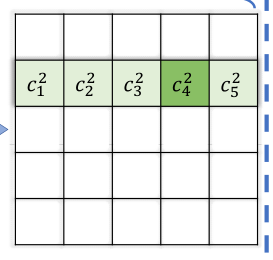
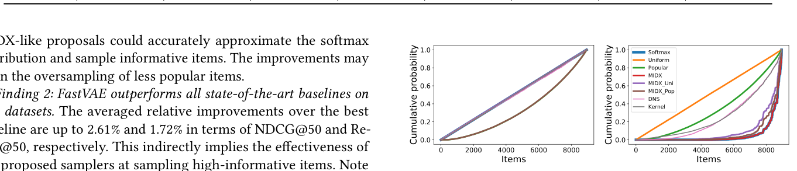

Fast Variational AutoEncoder with Inverted Multi-Index for Collaborative Filtering (基于倒排多索引的快速变分自编码器协同过滤)
- 会议/期刊: WWW 2022 (The Web Conference)
- 作者与机构: Jin Chen, Defu Lian, Binbin Jin, Xu Huang, Kai Zheng, Enhong Chen（电子科技大学、中国科学技术大学、华为云）
- 推荐链路定位: 召回（隐式反馈用户表征学习与全库打分）
- 研究方向: 协同过滤与双塔召回 / 生成式推荐
- 论文原文: https://arxiv.org/abs/2109.05773v2
- 开源代码: https://github.com/HERECJ/FastVae_Gpu
TL;DR (1分钟核心速览)
Mult-VAE 的多项式似然需要对全物品做 softmax，单步损失与梯度耗时随物品数 \(M\)线性增长；而现有 sampled softmax 的提议分布（Uniform/Popularity/二次核）与 softmax 分布偏差大、梯度估计噪声高。本文基于倒排多索引（乘积量化 + 残差）把 softmax 概率精确分解为三级多项分布，并给出两条亚线性近似采样器 MIDX_Uni / MIDX_Pop（\(O(KD+K^2+T)\)）。在 ML10M/Gowalla/Netflix/Amazon 上按 NDCG@50、Recall@50 评估，FastVAE 相对最优基线平均提升 2.61% / 1.72%，物品数 150 万时训练加速 6× 以上。
Background & Motivation (背景与核心矛盾)
- 主流范式: Mult-VAE 用高斯隐变量编码用户交互向量、解码为全物品上的多项分布，比高斯/逻辑似然更契合隐式反馈，是协同过滤的代表性非线性方法。
- 前人局限: ① 精确梯度含 \(\mathbb{E}_{j\sim P}\nabla_\theta o_j\)，计算量\(O(MD)\)，百万级物品不可行；② sampled softmax 只有在提议分布等于 softmax 分布时才无偏，而 uniform/popularity 与目标分布差异巨大；③ 二次核（kernel）采样虽更接近，但特征映射内存开销大且对长尾物品过度采样；④ 直接用 MIPS 索引只能返回确定性 Top-k，无法"按概率独立采样"，在扰动库上建索引又会引入相关性且模型更新即需重建索引。
- 核心洞察 (Key Insight): softmax 的内积 logit 在向量被分段量化为码字 + 残差后，概率本身可以沿码本层级做链式分解——于是"从 softmax 采样"退化成了"分层从 \(K\)个码字中采样，最后只在同簇小集合\(\Omega_{k_1,k_2}\) 内采样"。
- 本文切入点: 把 ANNs 里的倒排多索引（IMI）从"检索结构"改造成"采样结构"，用码本层级近似替代全物品归一化。
Method (核心方法设计)
1. 整体框架 (Overall Architecture)
物品向量 \(\boldsymbol{q}_i\in\mathbb{R}^D\)被均分为两段，各用\(K\)类 K-means 量化得到码本\(\mathcal{C}^1,\mathcal{C}^2\)，并保留残差\(\tilde{\boldsymbol{q}}_i=\boldsymbol{q}_i-(\boldsymbol{c}^1_{k_1}\oplus\boldsymbol{c}^2_{k_2})\)。用户向量\(\boldsymbol{z}_u\)同构切分后，采样分三步：先抽\(k_1\sim P^1_u(\cdot)\)，再抽\(k_2\sim P^2_u(\cdot|k_1)\)，最后在簇\(\Omega_{k_1,k_2}\)内抽物品。把抽到的\((i, Q(y_i|\boldsymbol{z}_u))\) 送入 sampled softmax 估计 ELBO 的第一项，KL 项保持闭式。由于采样与用户无关的部分（码本、簇成员、alias 表）只初始化一次，整个采样可在 GPU 上批并行。
flowchart TD
A["用户交互向量 y_u"] --> B["VAE Encoder: z_u = z_u^1 ⊕ z_u^2"]
Q["物品向量 q_i = c1_k1 ⊕ c2_k2 + r_i"] --> C["倒排多索引: 码本 + 簇成员 Ω"]
B --> D["三级分解采样 P1(k1)·P2(k2|k1)·P3(i|k1,k2)"]
C --> D
D --> E["候选集 Φ 与提议概率 Q(y_i|z_u)"]
E --> F["Sampled Softmax 损失 + KL"]
F --> G["全库内积 Top-N 召回"]
2. 关键设计拆解 (Key Designs)
- 精确分解：MIDX Sampler（把 softmax 拆成三级分布）：目标是 \(Q(y_i|\boldsymbol{z}_u)=\frac{\exp(\boldsymbol{z}_u^\top\boldsymbol{q}_i)}{\sum_{j}\exp(\boldsymbol{z}_u^\top\boldsymbol{q}_j)}\)。将 logit 拆成两段码字内积 + 残差内积后，分子分母可逐层归并： \(Q(y_i|\boldsymbol{z}_u)=P^1_u(k_1)\,P^2_u(k_2|k_1)\,P^3_u(y_i|k_1,k_2)\)， 其中 \(P^2\)的分母\(\psi_{k_1}=\sum_{k}\omega_{k_1,k}\exp(\boldsymbol{z}^{2\top}_u\boldsymbol{c}^2_k)\)，\(P^3\)为簇内残差 softmax。由于\(\omega_{k_1,k_2}>0\)，末级采样永不空簇，且分解是恒等变换——即该采样器与真 softmax 完全一致（实验图2中两条累积分布完全重合）。
- 近似采样器：MIDX_Uni / MIDX_Pop（把末级替换为静态分布）：精确版的瓶颈是仍需算全物品 logit。将 \(P^3\) 换成簇内均匀分布，可得闭式 \(Q_{\text{uni}}(y_i|\boldsymbol{z}_u)=\frac{\exp(\boldsymbol{z}_u^\top(\boldsymbol{q}_i-\tilde{\boldsymbol{q}}_i))}{\sum_{j\in\mathcal{I}}\exp(\boldsymbol{z}_u^\top(\boldsymbol{q}_j-\tilde{\boldsymbol{q}}_j))}\)， 即"只用码字近似物品"的 softmax；进一步注入流行度得 \(Q_{\text{pop}}(y_i|\boldsymbol{z}_u)\propto\exp(\boldsymbol{z}_u^\top(\boldsymbol{q}_i-\tilde{\boldsymbol{q}}_i)+\log \text{pop}(i))\)。直觉：码字承担了"粗粒度分布"，残差被丢弃的误差就是唯一偏差源。
- 偏差上界与训练目标：设 \(\|\tilde{\boldsymbol{q}}_i\|\le C\)，可证\(0<D_{\mathrm{KL}}[Q_{\text{uni}}\|Q]\le 2C\|\boldsymbol{z}_u\|\)，\(Q_{\text{pop}}\)仅多出\(\log\frac{\max \text{pop}}{\min \text{pop}}\)一项——量化越细（\(K\) 越大）残差越小、偏差越小，这解释了"索引粒度即精度旋钮"。总损失为 \(\mathcal{L}(u)=\frac{1}{S}\sum_{s=1}^{S}\sum_{i\in\mathcal{I}}y_{ui}\log\frac{\exp(\boldsymbol{z}^{(s)\top}_u\boldsymbol{q}_i-\log Q(y_i|\boldsymbol{z}^{(s)}_u))}{\sum_{j\in\{i\}\cup\Phi_u}\exp(\boldsymbol{z}^{(s)\top}_u\boldsymbol{q}_j-\log Q(y_j|\boldsymbol{z}^{(s)}_u))}-\mathrm{KL}\big(q_\phi(\boldsymbol{z}_u|\boldsymbol{y}_u)\|p(\boldsymbol{z}_u)\big)\)， 负样本由提议分布自身产生并按 \(\log Q\) 做重要性校正（非均匀、非批内），推理阶段无需采样、直接全库内积 Top-N。
Experimental Setup & Evaluation Protocol (实验设置与评估协议)
- 数据集与预处理: 过滤交互数 <10 的用户与物品；评分型数据（ML10M/Netflix/Amazon>4 分）统一二值化为 0/1 隐式反馈。
| 数据集 | #Users | #Items | #Interactions | 稀疏度 | 特征/场景说明 |
|---|---|---|---|---|---|
| ML10M | 47,292 | 5,942 | 2,001,164 | 99.2879% | 电影评分，稠密 |
| Gowalla | 29,858 | 40,988 | 1,027,464 | 99.9160% | LBSN 签到，极稀疏 |
| Amazon | 56,257 | 50,154 | 1,418,076 | 99.9497% | 图书评分，最稀疏 |
| Netflix | 422,624 | 17,618 | 53,417,358 | 99.2826% | 大规模电影评分 |
- 数据划分与防穿越 (Splitting Strategy): 对每个用户随机抽取 80% 交互构造历史向量用于训练，剩余 20% 作为留出正例评估；5 次独立重复取均值与标准差（\(\Delta=10^{-4}\)）。
- 排名评测协议 (Ranking Protocol): 训练完成后用历史向量编码得 \(\boldsymbol{z}_u\)，评估模型对留出正例的排序能力，报告
NDCG@50与Recall@50（指标含义与 Mult-VAE 的留出正例排序一致，未采用 1:99 采样负例），所有模型以 NDCG@50 调参。 - 对比基线与超参: 基线覆盖点式 WRMF、pairwise BPR/WARP-MF/AOBPR、动态/自适应负采样 DNS/PRIS/SA、生成式 Mult-VAE，以及 Uniform/Popularity/Kernel 三种提议分布；隐因子维数 \(d=32\)，生成模块\([M\to200\to32]\)、输入 dropout 0.5、batch 256、Adam + weight decay 0.01；FastVAE 采样数 200（ML10M/Netflix）、1000（Gowalla）、2000（Amazon），每码本 16 码字。
Key Experimental Results (实验关键数据)
1. 主实验对比 (Main Results)
| 模型 | ML10M NDCG@50 | ML10M Recall@50 | Gowalla NDCG@50 | Gowalla Recall@50 | Netflix NDCG@50 | Netflix Recall@50 | Amazon NDCG@50 | Amazon Recall@50 |
|---|---|---|---|---|---|---|---|---|
| WRMF | 0.3194 | 0.4967 | 0.1316 | 0.2223 | 0.3020 | 0.3653 | 0.0919 | 0.1802 |
| BPR | 0.2915 | 0.4642 | 0.1216 | 0.1978 | 0.2742 | 0.3283 | 0.0740 | 0.1441 |
| WARP-MF | 0.2968 | 0.4785 | 0.1273 | 0.2073 | 0.2953 | 0.3539 | 0.0798 | 0.1615 |
| AOBPR | 0.2934 | 0.4753 | 0.1385 | 0.2369 | 0.2952 | 0.3560 | 0.0906 | 0.1763 |
| DNS | 0.3153 | 0.4988 | 0.1622 | 0.2761 | 0.2974 | 0.3594 | 0.1119 | 0.2186 |
| PRIS | 0.3162 | 0.4937 | 0.1657 | 0.2736 | 0.2975 | 0.3608 | 0.1189 | 0.2244 |
| SA | 0.3237 | 0.5066 | 0.1704 | 0.2866 | 0.3177 | 0.3784 | 0.1378 | 0.2401 |
| Mult-VAE (Full Softmax) | 0.3206 | 0.5037 | 0.1751 | 0.2911 | 0.3227 | 0.3841 | 0.1441 | 0.2483 |
| FastVAE (MIDX_Pop) | 0.3275 | 0.5078 | 0.1797 | 0.2971 | 0.3238 | 0.3845 | 0.1404 | 0.2434 |
| Improv.% (vs 最优基线) | +1.17% | +0.24% | +2.63% | +2.06% | +0.34% | +0.10% | −2.57% | −1.97% |
2. 采样器消融与复杂度对比 (Ablation & Complexity)
| 提议分布 | 空间 | 采样预处理/单次 | 与 softmax 的偏差 | Gowalla/Netflix 收敛表现 |
|---|---|---|---|---|
| Uniform | \(O(1)\) | \(O(T)\) | 极大 | 全程落后，NDCG 最低 |
| Popularity | \(O(M)\) | \(O(T)\) | 大（偏热） | 优于 Uniform，仍低于 MIDX |
| DNS | \(O(MD)\) | \(O(BDT)\) | 大（Top-1 偏向） | 波动大 |
| Kernel（二次核） | \(O(MD^2)\) | \(O(D^2T\log M)\) | 中等，长尾过采样 | 分布接近但损失估计不适配，效果差 |
| MIDX（精确） | \(O(MD)\) | \(O(MD+T)\) | = 0（完全一致） | 精度上限，但不可实用 |
| MIDX_Uni (w/o 流行度) | \(O(KD+K^2+M)\) | \(O(KD+K^2+T)\) | \(\le 2C\|\boldsymbol{z}_u\|\) | 与 Mult-VAE 持平，稀疏集略优 |
| MIDX_Pop (w/o 末级残差 softmax → 流行度) | \(O(KD+K^2+M)\) | \(O(KD+K^2+T)\) | \(\le 2C\|\boldsymbol{z}_u\|+\log\frac{\max pop}{\min pop}\) | 最佳，4 数据集均值 +0.64% NDCG |
3. 关键实验发现 (Key Findings)
- 近似采样不掉点、反而略涨：用 MIDX 系列替换全 softmax 后，4 数据集平均 NDCG@50/Recall@50 相对提升 0.64%/0.25%，作者归因于对低流行度物品的过采样（图2 累积分布曲线在头部略高于 softmax）；换言之采样噪声在此处起到了隐式长尾增广作用。
- 精度上限由残差决定，与索引粒度强相关：\(\|\tilde{\boldsymbol{q}}_i\|\le C\)直接进入 KL 上界，簇数从 8→128 时训练前期收敛明显加快；但\(K=16\) 已足够稳健，说明只需"粗划分 + 末级精细分布"即可，无需极细量化。
- 加速随物品数放大、且不牺牲精度：物品数从 20 万增至 150 万时，Mult-VAE 单 epoch 由 2.3 s 增至 10.2 s，而 MIDX 采样恒约 1.5 s，整体训练加速 >6×；同时它在 Gowalla（最稀疏）上超越全部 SOTA，但在 Amazon 上略逊于全 softmax（−2.57%），说明极稀疏 + 大物品库时残差丢弃带来的偏差不可忽略。

Highlights & Limitations (亮点、对比与审稿批判)
- 与代表作对比 (vs. Prior Work): 相比 Mult-VAE 的 \(O(MD)\)全 softmax，本文保持同一 ELBO 目标但把归一化降为\(O(KD+K^2+T)\)；相比 Kernel 采样，它无需特征映射、内存低且对长尾不过采；相比"扰动库 + MIPS 索引"的无偏采样方案，样本相互独立且无需随参数更新重建索引；相比 DNS/PRIS 等 Top-k 式难负采样，它给出的是带重要性权重的分布一致采样，可直接代入 sampled softmax 校正。
- 可迁移亮点: ①"用 ANNs 索引结构做提议分布"这一思路可直接迁移到双塔召回的大词表 softmax、序列推荐的 next-item 采样与对比学习负采样；②\(\mathrm{KL}\le 2C\|\boldsymbol{z}_u\|\) 给出了"索引量化误差 ⇔ 梯度偏差"的定量接口，可用作量化粒度的选型依据。
- 审稿级局限批判: ① 索引（码本、簇成员、alias 表）依赖物品表征，随训练漂移需周期重建，重建频率与精度/开销的权衡未给实验；② 增益幅度偏小（多数据集仅 0.1–2.6%），且 Amazon 上不及基线，缺少与 RecVAE/Mult-VAE-annealed 等更强 VAE 变体的对比；③ 评估为每用户 80/20 随机留出，未报告全库 Full-Ranking 的采样负例比例与显著性检验（仅给标准差），对工业级"百万物品无偏排序"的说服力仍待加强。
Rating (四维评分)
- 方法创新性 (Novelty): ⭐⭐⭐⭐⭐ （首次把倒排多索引从"检索结构"改造为"softmax 提议分布"，三级分解恒等式与 KL 上界构成完整的理论闭环）
- 评估协议与实验扎实度 (Protocol & Experiments): ⭐⭐⭐⭐ （4 个真实数据集 + 9 个基线 + 5 次重复与采样/簇数敏感度分析较完整，但缺显著性检验与更强 VAE 基线）
- 写作与数学规范度 (Clarity & Rigor): ⭐⭐⭐⭐⭐ （定理—证明—复杂度表（Table 1）链条清晰，KL 偏差上界把量化误差与梯度偏差显式挂钩）
- 工业落地与复现价值 (Industrial & Practical Value): ⭐⭐⭐⭐ （代码已开源且支持 GPU 采样，百万物品 6× 加速收益直接可用；代价是索引重建与 \(K\)、采样数等超参需按库规模调优）